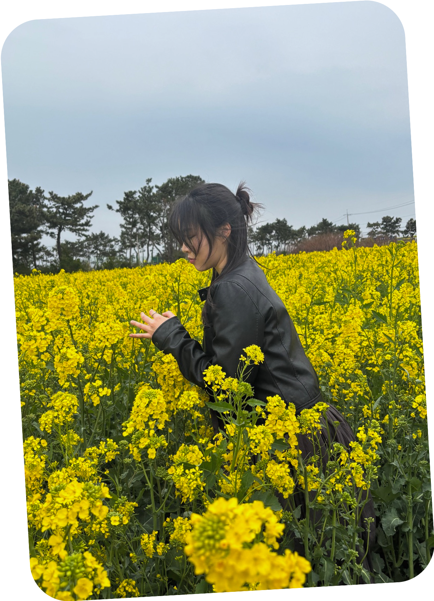

<SEHUI./LEE>
Visual & UX/UI Designer
LEESEHUI
( SCROLL )
WORK
BY
SEHUI·
I observe, empathize, and design.
Good design comes from care.
And yes — I notice everything.

Lee Se Hui
사소한 불편을 지나치지 않는 디자이너가 되고 싶습니다.
익숙한 것을 다르게 보고, 보이지 않는 마음까지 살필 수 있기를,
사용자에게 닿는 순간이 따뜻하길 바랍니다.
ABOUT ME
- Name 이세희 / Lee Se Hui
- Birth 2000.02.21 Seoul
- Contact
tptp406@naver.com
010-4928-0142
@se.huui
EDUCATION
- 2025 강남 이젠아카데미 UX/UI 과정 수료
- 2022 ~ 2025 인덕대학교 시각디자인과 졸업
- 2015 ~ 2017 매그넷고등학교 금융경영과 졸업
LIKES
- 일기쓰기
- 전시회 관람
- 하늘보기
EXPERIENCE
- 2020. 천지관세법인 수출통관
- 2017. (주)케일 회계관리
LICENSE
- 2022 포토샵 1급
- 2017 컴퓨터활용능력 2급
- 2016 전산회계 1급
- 2015 ITQ
SKILL
-
Adobe Illustrator
-
Adobe Photoshop
-
Adobe InDesign
-
Adobe Premiere Pro
About Me


인덕대학교 시각디자인 전문학사
시각디자인을 3년간 전공하며 앨범 디자인, 편집 디자인, 패키지 디자인, 브랜드 창업 디자인 등 다양한 분야의 디자인을 경험했습니다. 졸전을 준비하는 3학년때 처음 접하게 된 UX/UI 디자인에 가장 큰 흥미를 느꼈고, 이후UX/UI 디자이너로서의 역량을 키우는 데 집중하게 되었습니다.

강남 이젠아카데미 프론트엔드 부트캠프 수료
웹 페이지 마크업부터 동적인 사용자 인터랙션 구현까지, HTML/CSS/JavaScript를 통해 퍼블리싱 역량을 쌓았고, React의 컴포넌트 구조를 바탕으로 효율적인 UI 구성과 상태 관리 기초를 익혔습니다.

관세법인 수출통관 직무경험
관세법인에서의 근무 경험은 사용자 중심 사고에 대한 기반이 되었습니다. 수출입 기업 고객들과의 지속적인 커뮤니케이션을 통해 문제를 파악하고 해결안을 제시하는 과정을 반복하며, 실제 사용자의 니즈를 빠르게 파악하고 효율적으로 대응하는 감각을 키울 수 있었습니다.
✌🏻 2000.02.21 ✌🏻 NEAREST BOND SESSION:SEOUL UXUI DESIGNER ✌🏻 2000.02.21 ✌🏻 NEAREST BOND SESSION:SEOUL UXUI DESIGNER ✌🏻 2000.02.21 ✌🏻 NEAREST BOND SESSION:SEOUL UXUI DESIGNER ✌🏻 2000.02.21 ✌🏻 NEAREST BOND SESSION:SEOUL UXUI DESIGNER ✌🏻 2000.02.21 ✌🏻 NEAREST BOND SESSION:SEOUL UXUI DESIGNER ✌🏻 2000.02.21 ✌🏻 NEAREST BOND SESSION:SEOUL UXUI DESIGNER ✌🏻 2000.02.21 ✌🏻 NEAREST BOND SESSION:SEOUL UXUI DESIGNER ✌🏻 2000.02.21 ✌🏻 NEAREST BOND SESSION:SEOUL UXUI DESIGNER ✌🏻 2000.02.21 ✌🏻 NEAREST BOND SESSION:SEOUL UXUI DESIGNER ✌🏻 2000.02.21 ✌🏻 NEAREST BOND SESSION:SEOUL UXUI DESIGNER ✌🏻 2000.02.21 ✌🏻 NEAREST BOND SESSION:SEOUL UXUI DESIGNER
Pieces That Make Me
hobbies, and Myself


- 
I observe, empathize, and design.
Good design comes from care.
And yes — I notice everything.
뿌리에서 잎으로, 자라는 디자인 철학
From Roots to Leaves,
A Growing Philosophy of Design
-
Leaves of Clarity (맑은잎사귀)
정보를 한눈에 이해할 수 있도록, 나무 잎사귀처럼 맑고 선명한 구조의
디자인을 만듭니다. 복잡한 내용도 투명한 잎사귀 사이로 빛이 스며들 듯,
사용자가 편안하게 읽고 이해할 수 있도록 설계합니다. -
Trunk of Simplicity (견고한 줄기)
겉으로는 단순하지만, 나무의 줄기처럼 깊은 뿌리와 단단한 구조 속에
고민이 담긴 디자인을 지향합니다. 불필요한 장식을 덜어내고 본질만 남겨,
오래도록 의미가 남는 가치를 만듭니다 -
Roots of Detail (세심한 뿌리)
뿌리 하나까지 촘촘히 뻗어 나무를 지탱하듯, 작은 디테일까지 신경 써 브랜드와
제품의 신뢰를 굳건히 합니다. 보이지 않는 땅속 뿌리의 정성이 나무를 키우듯,
보이지 않는 디테일이 디자인을 성장시킨다고 믿습니다.
01. SM ENTERTAINMENT
HTML / CSS / Js qury / Figma

Web Re:design
Team Leader
기획
90%
디자인
100%
퍼블리싱
40%


02. FANDOM-APP (Nuvie)
React / React Router / Swiper.js / Canvas-confeti / useState / useEffect / Vercel / GitHub / Figma / Midjourney


03. ALBAMON-RE:DESIGN
Adobe Illustrator / Adobe Photoshop / FIGMA


Clone coding
STORY
6개월간의 프론트엔드 부트캠프 과정 동안 HTML, CSS, JavaScript 등 웹의 기초 기술을 집중적으로 학습하며,총 6개의 클론코딩 프로젝트를 완성했습니다. 실제 웹사이트를 분석하여 구조를 이해하고, 반복적인 실습을 통해 코드 작성 역량과 문제 해결 능력을 키울 수 있었습니다.단순히 따라 하는 것을 넘어서 각 기능의 작동 원리를 분석하고, UI 구성 및 반응형 설계에도 집중했습니다. 이 과정을 통해 웹 프론트엔드 전반의 기초를 단단히 다졌고, 실무 적용 기반을 마련했습니다.
CLONE CODING
6개월간의 프론트엔드 부트캠프 과정 동안 HTML, CSS, JavaScript 등 웹의 기초 기술을 집중적으로 학습하며, 총 6개의 클론코딩 프로젝트를 완성했습니다. 실제 웹사이트를 분석하여 구조를 이해하고, 반복적인 실습을 통해 코드 작성 역량과 문제 해결 능력을 키울 수 있었습니다.


제 52회 졸업전시
Induk university
시각디자인과 졸업전시회 당시, 디스플레이 디자인 팀의 팀장으로 활동했습니다.
약 100여 명의 학생이 참여하는 전시를 위해 공간 배치도를 직접설계하고,
가벽과 가구 대여 등의 실무를 진행했습니다.
Display design
Experience
학생들의 니즈를 반영하기 위해 수요조사 및 설문조사를 기획하고 실행했으며,
진행 과정에서 발생한 학생과 교수 간의 의견 충돌 또한 중재하며 원활한 소통을 위해 힘썼습니다.
이 경험은 디자인뿐 아니라 조율 능력과 리더십을 기를 수 있는 소중한 기회였습니다.
SENIOR EXHIBITION
MULTI-
DISCIPLINARY
DESIGN WORKS
01
Showcase
Design
인덕대학교 2024졸업전시회
직무 : 디스플레이디자인 팀장
프로젝트기간 : 2024.03.09 ~ 2024.11.12
팀원 : 5명
목표 : 공간디자인 설계 및 작품 전시기획

02
Brand Launch
Design
창업 브랜딩 디자인
직무 : 팀프로젝트 팀장
프로젝트기간 : 2024.03.09 ~ 2024.11.09
팀원 : 2명
목표 : 개별 맞춤 여행 플랜 및 패키지 대여 서비스 제공
03
Mobile Application
Design
모바일 앱 디자인 & 프로토타입
직무 : 팀프로젝트 팀장
프로젝트기간 : 2024.03.09 ~ 2024.11.12
팀원 : 2명
목표 : 개인 맞춤형 여행서비스 제공 어플제작
Skills & Tools


ABOUT THIS PORTFOLIO
- WHY
- STYLE
- PURPOSE
궁금하실 부분을 몇가지 적어보았습니다.